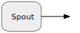

Spouts
A Spout is a stream graph component with no input port and a single output port. As such it serves as a “point of entry” into a stream setup for data elements from other sources (e.g. from memory, disk or the network).

swave predefines quite a few ways to create Spouts from other types and constructs.
Check out the API docs of the Spout companion object or its Source Code for the complete reference.
Streamable[T]
swave defines a type-class Streamable which encapsulates the ability to create Spout instances from values of type T:
abstract class Streamable[-T] {
type Out
def apply(value: T): Spout[Out]
}If an implicit Streamable[T] instance can be found (or created) for a type T then values of type T can be turned into spouts with a simply Spout(value) call:
val foo: T = ...
// the element type of the spout is defined by the
// implicitly available `Streamable[T]` instance.
val fooSpout = Spout(foo)
Maybe more importantly, certain transformations like flatmap, flatConcat or flattenMerge will then automatically work on streams of type T.
Predefined Streamables
swave predefines Streamable instances for these types:
Spout[T](spouts can be trivially turned into spouts)Option[T]immutable.Iterable[T]Iterator[T]Publisher[T]Future[T]Try[T]Tfor allT :Bytes(see the File IO chapter for details)() => Tfor allT: Streamable
The following snippet, for example, shows, that flatmapping Spout[Option[Int]] to Spout[Int] works as expected without further ado:
import scala.concurrent.Future
import swave.core._
implicit val env = StreamEnv()
def evenIntsViaFlatmap =
Spout.ints(from = 0)
.flatMap(i => if (i % 2 == 0) Some(i) else None)
def evenIntsViaFilter =
Spout.ints(from = 0)
.filter(_ % 2 == 0)
val a: Future[List[Int]] = evenIntsViaFlatmap.take(5).drainToList(limit = 5)
val b: Future[List[Int]] = evenIntsViaFilter.take(5).drainToList(limit = 5)
// since both streams in this example run synchronously
// both futures are already fulfilled and we can access
// their `value` members to compare results
a.value.get shouldEqual b.value.getCustom Streamable Example
You can easily make a custom type T fully “streamable” by defining the semantics for how instances of T can be turned into a Spout. The way to do this is through a custom Streamable[T] implementation.
For example, suppose we’d like to be able to flatten streams of Either[A, B] instances into a stream of the most specific common super-type of A and B. Here is how this could be done:
import scala.util.Success
import shapeless.Lub
import swave.core._
implicit val env = StreamEnv()
implicit def forEither[A, B, C](implicit ev: Lub[A, B, C]) =
new Streamable[Either[A, B]] {
type Out = C
def apply(value: Either[A, B]): Spout[C] =
value.fold(a => Spout.one(ev left a), b => Spout.one(ev right b))
}
def eitherStream: Spout[Either[(Char, Int), String]] =
Spout(Left('0' -> 0), Right("1"), Right("2"))
def anyRefStream: Spout[AnyRef] =
eitherStream.flattenConcat()
anyRefStream
.drainToList(5)
.value.get shouldEqual Success(List('0' -> 0, "1", "2"))